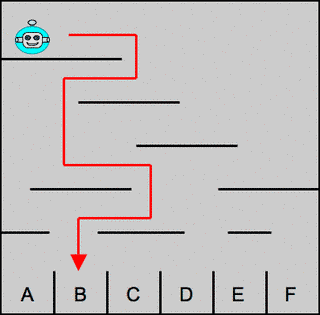
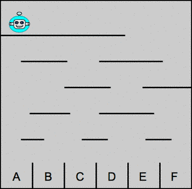
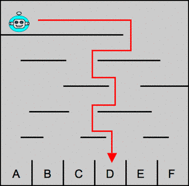

Castor dépose son robot en haut d'un labyrinthe, pour ensuite le regarder tomber de plate-forme en plate-forme, jusqu'à ce que le robot atteigne une des cases situées tout en bas. Le robot se déplace toujours de la même façon : il commence par partir vers la droite, puis, à chaque fois qu'il tombe d'une plate-forme à une autre, il repart dans la direction opposée.
L'illustration ci-dessous à gauche montre en rouge le trajet parcouru par le robot dans le labyrinthe no 1.
|  |  |
| Labyrinthe no 1 : exemple. | Labyrinthe no 2 : à vous de trouver ! |
Si Castor place son robot en haut à gauche du labyrinthe no 2, dans quelle case le robot va-t-il tomber ?

Le robot se déplace selon un algorithme, qu'il fallait comprendre et appliquer sur le deuxième labyrinthe. En langage informatique, cet algorithme peut être décrit ainsi :
Tant qu'on n'est pas arrivé en bas, répéter les 4 lignes suivantes :
Avancer dans la direction courante, puis
Si on atteint le bord d'une plateforme, effectuer les 2 lignes suivantes :
Tomber à la première plateforme qui se trouve dessous, et
Inverser la direction courante
De manière générale, un algorithme décrit une séquence d'instructions à suivre jusqu'à atteindre un état final ou une réponse finale.